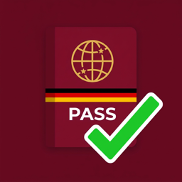

Pass the German naturalisation test with confidence.
PassDeutsch is an iPhone app for preparing for the Einbürgerungstest (“Leben in Deutschland”). Practise every question at your own pace, track what you have mastered and take realistic exam simulations until you feel ready.
PassDeutsch is free with ads. An optional subscription removes all ads.
Questions, feedback or a mistake in a question? Email mehsalbah@gmail.com.
PassDeutsch is an independent study app and is not affiliated with the Federal Office for Migration and Refugees (BAMF) or any government agency. The official question catalogue is published by the BAMF.
PassDeutsch ist eine iPhone-App zur Vorbereitung auf den Einbürgerungstest („Leben in Deutschland“). Übe alle Fragen in deinem eigenen Tempo, verfolge deinen Lernfortschritt und mach realistische Testsimulationen, bis du dich bereit fühlst.
PassDeutsch ist kostenlos und werbefinanziert. Mit einem optionalen Abo entfernst du alle Anzeigen.
Fragen, Feedback oder einen Fehler in einer Frage gefunden? Schreib an mehsalbah@gmail.com.
PassDeutsch ist eine unabhängige Lern-App und steht in keiner Verbindung zum Bundesamt für Migration und Flüchtlinge (BAMF) oder einer anderen Behörde. Den offiziellen Fragenkatalog veröffentlicht das BAMF.